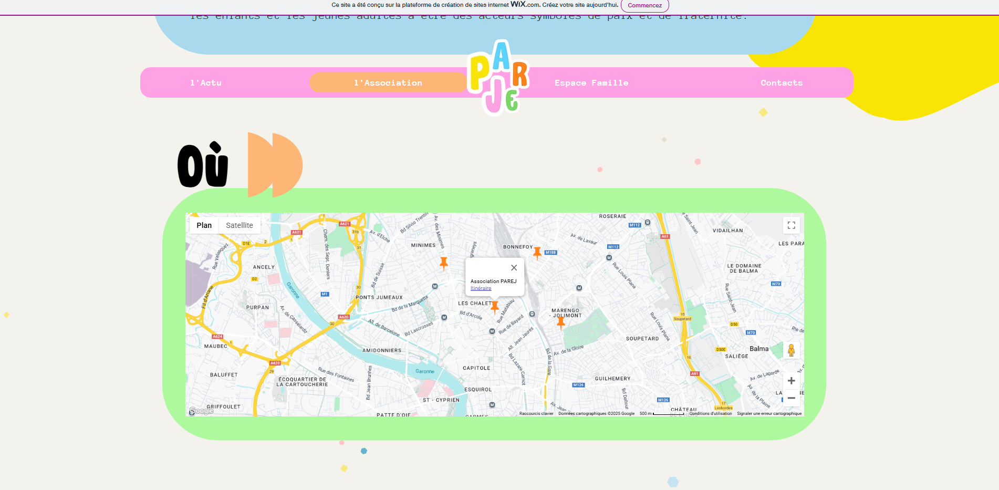
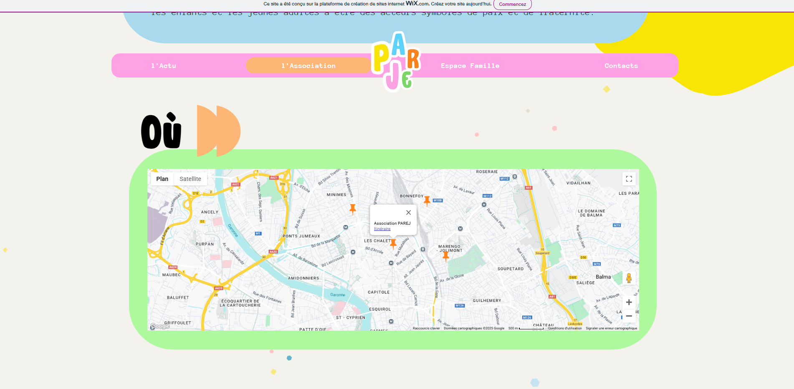

Portfolio.
Ioané SULASHVILI

PAREJ est une associationà but non lucratif ayant à cœur d’offrir aux enfants un cadre de loisirs sécurisant,
reposant et à l’écoute des envies des familles.
L'ancien site étant obselète érgonomiquement et graphiquement, on nous a proposé de faire une refonte graphique
afin de le rendre plus attractif et facile d'utilisation.
C'est un projet en no-code donc nous n'avons pas codé mais réalisé le site sous wix. Lors de ce projet nous étions
deux, moi et Gabin Soula mais nous avons travaillé en collaboration avec les BTS COM.
Nous nous sommes répartis les pages du site et avons refait graphiquement le site.
 



Languages ou outils utilisées :